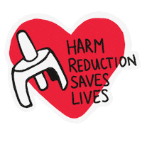

Student Empowerment — Saving Lives — Fighting Against the Opioid Epidemic
The total yearly cost to Arizona for hospitalizations resulting from opioid abuse (ADHS, 2025).
The percentage of overdose deaths resulting from synthetic opioids (ADHS, 2025).
The percentage of overdoses resulting in death while there is a bystander nearby (CDC, 2025).

The desired response time to achieve through strategically placed Narcan dispensers (Arizona Department of Education, 2025).
Hello! My name is Vincent Duong. I attend Pima Community College (PCC), and I am very honored to be a member of the Phi Theta Kappa International Academic Honor Society. As a Tucson native, I have observed firsthand how the opioid crisis has evolved to become destructive locally. However, my view on this crisis is not strictly academic—it is rooted in professional clinical experience. Upon earning my Certified Nursing Assistant (CNA) certification and entering a Clinical Coordinator role at Handmaker, I had a front-row seat to the impact of patient care, ethical decision-making in medicine, and emergency response logistics. While coordinating staff training and scheduling, I saw firsthand how time, preparedness, and prompt medical treatment can save patients' lives. These experiences profoundly influenced my commitment to improving public health and campus safety within our community.
While Tucson continues to fight against its deadly and constantly evolving opioid epidemic, the people living here see the tremendous damage that addiction causes directly. The financial, psychological, and societal burdens on our area's healthcare systems are extreme. Therefore, our community needs to transition from merely responding to emergencies and start developing proactive harm-reduction methods. Through this literature review and initiative plan, I advocate for a reasonable and lifesaving option built upon the fundamental healthcare principle of patient autonomy: I recommend installing Narcan (Naloxone) publicly throughout all facilities at Pima Community College utilizing both pre-existing emergency cabinets and independent dispensers. Removing barriers for students to obtain this medication is a vital step toward protecting our campus community and saving lives.
To fully grasp why providing public access to Narcan across Pima Community College campuses is a paramount responsibility, we must thoroughly investigate the systemic roots that created the opioid epidemic. Our students today do not suffer solely because of isolated, immoral decisions or individual choices; they suffer from a complex, multi-decade failure in public health. According to the State Health Access Data Assistance Center (SHADAC), the primary catalyst for this widespread dependence nationwide was the mass over-prescription of narcotic painkillers. This ultimately spawned a major illicit heroin market and later a highly lethal illicit fentanyl market driven by extremely low-cost chemical production, transforming the public health landscape of the southwestern United States (SHADAC, 2026).
There are two massive financial and infrastructural problems plaguing us in this ongoing crisis. First, an exhaustive 2025 Technical Report published by the Arizona Department of Health Services (ADHS) estimates that Arizona loses approximately $2.2 billion annually treating patients hospitalized for opioid-related injuries. Utilizing an array of statewide databases, including MEDSIS and death certificates, researchers discovered that synthetic opioids now account for 94.5% of all opioid overdose deaths, essentially completely replacing traditional narcotics. Second, this same report notes that Pima County is experiencing some of the highest rates of opioid-related hospitalizations in Arizona. Therefore, it is essential to implement large-scale, campus-based interventions to alleviate the immense pressure currently put on local emergency rooms (ADHS, 2025). Importantly, the report stated that naloxone was successfully administered in over 80% of EMS responses statewide, indicating its vital role as an immediate survival tool and demonstrating the absolute necessity of getting it into the hands of citizens prior to the arrival of paramedics.
In Pima County, this macroeconomic burden is deeply acute and intensely localized. Tucson’s location as a primary interstate transportation route along I-10 facilitates the rapid introduction of highly pure synthetic substances, creating extreme hyper-local exposure. Due to the immense size of Pima Community College—which provides educational opportunities to tens of thousands of commuter students across numerous buildings—the likelihood of a severe narcotic overdose event occurring within shared learning spaces or adjacent parking facilities is mathematically high. Relying solely upon municipal emergency response systems creates an inherent, dangerous time delay between the identification of an overdose and the administration of lifesaving intervention. We require immediate, campus-level mitigation strategies that place preventive measures directly into the student environment.
Although the current opioid problem in Tucson is developing at an alarming rate, it did not happen overnight. According to a peer-reviewed study supported by the National Institutes of Health (NIH), the U.S. opioid epidemic developed in four distinct waves. Each wave was characterized by global supply chain shifts, regulatory changes, and federal policy decisions (Laing & Donnelly, 2024).
Addressing the opioid crisis at a collegiate level requires understanding exactly why vulnerable populations utilize these substances, pushing past societal stigmas. The narrative that people simply want to "get high" is simplistic and counterproductive to recovery efforts. In reality, opioids frequently serve as a protective mechanism for unhoused populations seeking to numb the physical pain of sleeping on the ground, or as desperate self-medication for severe post-traumatic stress disorder (PTSD) stemming from street violence. Acknowledging the complex socioeconomic factors driving addiction clarifies exactly why punitive approaches fail, and why accessible medical interventions like Narcan must be available to keep individuals alive long enough to receive comprehensive rehabilitation.
The complex socioeconomic environment of Southern Arizona amplifies these vulnerabilities. Extreme desert seasonal weather, a lack of affordable housing, and substantial gaps in mental health funding create vicious cycles of substance reliance. For modern community college students—who frequently juggle gig-economy jobs, full-time class schedules, and financial instability—vulnerability manifests in unique ways. This includes accidental overdoses resulting from exposure to counterfeit prescription drugs marketed as illicit study aids or sleep supplements. Recognizing that chemical exposure is often a direct result of systemic survival pressures allows institutions to build realistic, structural safety nets on campus rather than relying on moralizing rhetoric.
Before developing recommendations for making Narcan universally available on college campuses, we must thoroughly evaluate alternative solutions attempted at the local and state levels. Analyzing the successes, failures, and logistical shortcomings of these interventions ensures the development of an effective strategy designed specifically to meet the realities of Pima Community College.
Historically, Arizona responded to substance use with a strict "War on Drugs" and "law enforcement-first" stance, heavily punishing possession with high incarceration rates. Overwhelming longitudinal evidence indicates this approach fails to address the physiological and psychological root causes of chemical dependence. Punitive responses do not reduce substance use; rather, they isolate users from safe practices and medical assistance (Laing & Donnelly, 2024). Furthermore, this approach actively increases overdose fatalities because bystanders and users fear calling 911 due to the threat of arrest. Modern public health policy has consequently shifted toward practical harm-reduction measures focused on keeping the patient breathing over making an arrest.
The historical ineffectiveness of punitive containment along major Southwestern transportation corridors proves that supply-side interdiction cannot resolve a neurological crisis. When institutions rely on policing, illicit supply networks adapt by manufacturing smaller, more highly concentrated chemicals. Consequently, the toxic potential of street supplies increases exponentially while social isolation deepens, significantly increasing the risk of fatal consequences by eliminating opportunities for community-based interventions.
A more progressive alternative has emerged through the "Naloxone Leave-Behind Program," utilizing federal State Opioid Response (SOR) grants. According to the Arizona Health Care Cost Containment System (AHCCCS), the state uses these massive federal funds to subsidize naloxone kits for community organizations, first responders, and educational institutions (AHCCCS, 2024). Under this model, EMS providers are empowered to leave a physical kit of Narcan with the family, friends, or roommates of an individual after treating an overdose at a private residence.
While this program successfully reduces secondary overdoses at home, it is inherently reactive; it requires a patient to have already experienced an overdose severe enough to warrant an ambulance dispatch. Additionally, it fails to address overdoses occurring in public areas, college campuses, or among individuals living alone. However, evaluating this option is vital because the AHCCCS SOR grant provides a proven framework that could allow PCC to obtain Narcan medication for free, permanently eliminating the cost concerns previously expressed by the Board of Governors (AHCCCS, 2024).
Hesitant administrators frequently propose focusing strictly on educational awareness campaigns, theorizing that knowledge alone will curb fatality rates. A rigorous, peer-reviewed study published in JAMA Pediatrics surveyed thousands of college-aged students to assess their ability to identify an overdose and their willingness to intervene. The study concluded that while young adults possess an extremely high willingness to act during a medical emergency, fatal gaps exist in their physical accessibility to lifesaving devices (Freibott et al., 2024).
Education alone is insufficient if the necessary equipment to save a life is inaccessible. A student may accurately recognize the cyanosis (blue lips) and agonal breathing indicative of a fentanyl overdose, but without immediate access to an opioid antagonist like Narcan, that theoretical knowledge cannot stop a fatality. Informing a campus population about a chemical epidemic without providing the explicit physical tools to intervene creates a paralyzing dynamic of institutional liability, rendering education-only campaigns hollow gestures.
To successfully implement public-access Narcan, we must address the issue of bystander hesitancy. According to an empirical surveillance report from the Centers for Disease Control and Prevention (CDC), nearly 43 percent of overdose deaths involve a witness who failed to intervene (CDC, 2025). Witnesses typically hesitate due to severe anxiety about causing further harm or terrifying concerns regarding potential civil and criminal liability.
To overcome this, PCC must aggressively advertise the legal protections available to students. Arizona Revised Statutes § 36-2267 outlines robust Good Samaritan protections, definitively stating that any person who administers an opioid antagonist in good faith is immune from professional, civil, and criminal liability. Combining these legal protections with physical accessibility forms the foundation of my proposed implementation plan, tailored specifically for PCC.
To establish this physical infrastructure and community readiness, I propose a comprehensive, three-phase implementation plan tailored specifically to the geographic and demographic realities of Pima Community College:
The first phase involves an immediate, cost-efficient rollout by adopting the "proof-of-concept" model pioneered by the University of Arizona Health Sciences. Their collaborative effort with the Pima County Health Department seamlessly placed Narcan kits inside 308 existing campus AED cabinets (University of Arizona Health Sciences, 2024). This instantly bypasses the massive infrastructural costs, labor, and time associated with mounting new boxes. Because fire marshals have already strategically mapped AED locations to guarantee rapid responses, co-locating Narcan perfectly mirrors the Arizona Department of Education's recommendation to keep emergency response times under three minutes (Arizona Department of Education, 2025). Furthermore, students already associate AED cabinets with lifesaving action, reducing cognitive load during a panic scenario.
Once a foundational safety net is established via AED placement, PCC must expand the initiative by deploying stand-alone Narcan dispensers in highly visible student hubs, such as student unions and cafeterias. These dispensers bridge the critical gap between campus emergencies and at-home prevention. Because social stigma often prevents students from walking into a clinic to ask a nurse for Narcan, public dispensers allow students to proactively and anonymously take the medication home. This empowers students to counteract overdoses in off-campus environments—such as apartments and dormitories—where isolation makes fatalities statistically most likely to occur.
With the highly commendable recent initiative by the new PCC Chief of Police to begin installing Narcan alongside AED machines, the physical infrastructure of Phase 1 is thankfully already underway. However, physical access without practical knowledge is useless. Relying heavily on the findings of Freibott et al. (2024), Phase 3 requires launching a massive, campus-wide education campaign. This campaign should extensively utilize digital signage, integrate mandatory 5-minute training modules into freshman orientations, and leverage social media. The curriculum must clearly indicate that these tools are available, teach students how to identify agonal breathing, and explicitly advertise that they are protected by the Good Samaritan law when intervening. Educating the community ensures these new dispensers are utilized effectively and without hesitation during those critical, fleeting first three minutes.